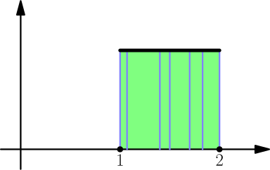
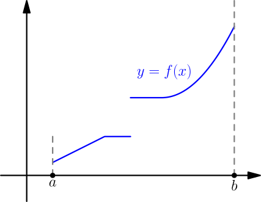
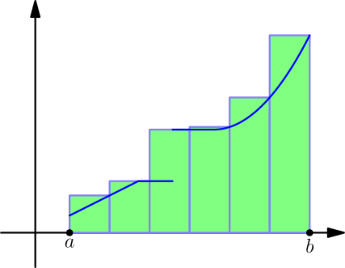
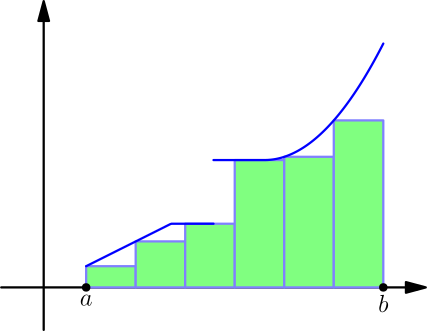
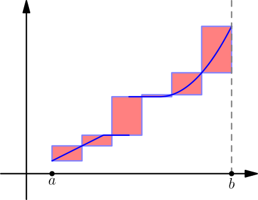
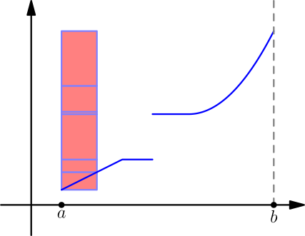

Defining the Integral¶
Let $f$ be a function that has minimums and maximums on $\leftsquarebracket a,b]$ and all closed subintervals of $\leftsquarebracket a,b]$. Last time we showed that $$ \text{any lower sum} \le \text{any upper sum}, $$ even if the lower and upper sums are from different partitions. Based on that, drawing all upper and lower sums on a number line looks something like this:
Now it is clear that there must be some number between all upper sums and lower sums. (Here "between" means that the number may be equal to upper or lower sums, which is the case for any function whose graph is a horizontal line.) However, it's not clear whether there's just one number or multiple different numbers between all upper and lower sums.
In the examples we did in the beginning, we calculated integrals based on the inequality $$ \text{any lower sum} \le \text{integral} \le \text{any upper sum}. $$ That was enough to determine the value of the integral every time, so there never were multiple numbers between all upper and lower sums. We're about to define the integral properly, and we'll make it undefined if there are multiple numbers.
A function $f$ is called integrable on $[a,b]$ if it has minimum and maximum values on $[a,b]$ and all closed subintervals of $[a,b]$, and there is only one number between any lower sum and any upper sum. That number is called the integral of $f$ on $[a,b]$.
Usually the integral is defined with slightly more "generalized versions" of minimum and maximum, but the above definition is good enough for our needs.
Are all functions integrable?¶
Recall that a number is called rational if it can be written as a fraction of integers, and irrational if it can't. Let $$ f(x) = \begin{cases} 1, & \text{if $x$ is a rational number} \\ 0, & \text{if $x$ is an irrational number}. \end{cases} $$ Unfortunately it's hard to draw a graph of this function.
Because any interval contains rational numbers, the maximum of $f$ on any interval is $1$. For that reason, an upper sum of $f$ on $[1,2]$ looks something like this, regardless of the partition being used:

Every interval also contains irrational numbers, so all minimums are $0$, and all lower sums looks like this:
Because every upper sum is the square area $1^2 = 1$ and every lower sum is zero, there are multiple different numbers between all upper sums and lower sums (such as $0$, $\frac{1}{2}$ and $1$), and so the function $f$ is not integrable.
Not all functions are integrable, even if the required minimums and maximums exist.
Which functions are integrable?¶
Suppose that a function $f$ is increasing (but not necessarily strictly increasing) on $[a,b]$. In other words, the graph of $f$ never goes down as you move from left to right.

Let's partition the interval $[a,b]$ into $n$ equally sized pieces and draw the upper and lower sums. Because $f$ is increasing, it has a maximum value on any closed interval at the right endpoint of the interval. Similarly it has a minimum value at the left endpoint of any closed interval. The upper sums look like this:

Lower sums look like this:

Let's look at how much the upper and lower sums differ. I'll draw that with red.

Now we can move all rectangles together so that they line up:

This creates a big rectangle whose width is $(b-a)/n$ and height is $f(b)-f(a)$. Its area is $$ \text{upper sum} - \text{lower sum} = \frac{b-a}{n}(f(b)-f(a)), $$ so we get $$ \begin{align} \lim_{n \to \infty} (\text{upper sum} - \text{lower sum}) &= \lim_{n \to \infty} \left( \frac{b-a}{n}(f(b)-f(a)) \right) \\ &= 0(f(b)-f(a)) = 0. \end{align} $$ This means that there exists upper sums and lower sums that are as close to each other as we want. For that reason, there can't be multiple different numbers between all upper and lower sums.
If a function is increasing on $[a,b]$, then it's integrable on $[a,b]$.
A similar derivation works for decreasing functions.
If a function is decreasing on $[a,b]$, then it's integrable on $[a,b]$.
We know that if a function is continuous on a closed interval, then it gets minimum and maximum values on that interval. However, showing that there's only one number between all upper and lower sums of a continuous function is more difficult than one might expect, so we'll skip that.
If a function is continuous on $[a,b]$, then it's integrable on $[a,b]$.